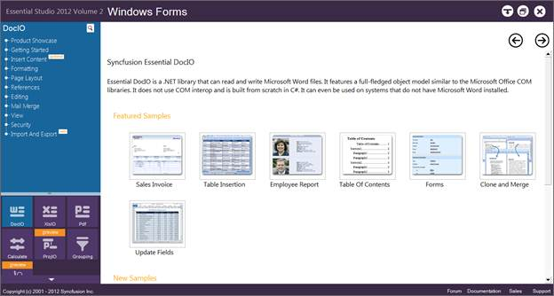
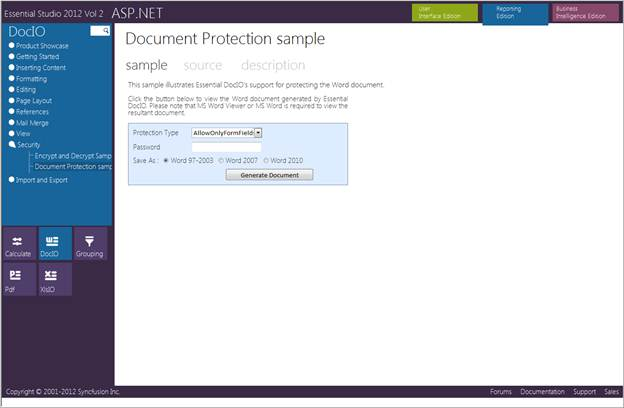
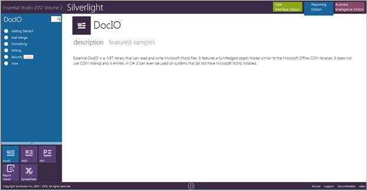
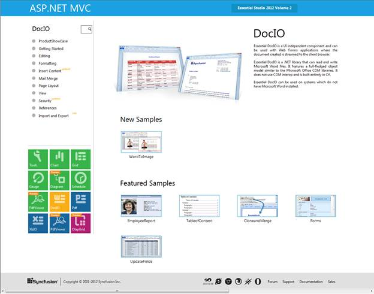

This section covers the location of the installed samples and describes the procedure to run the samples through the sample browser and online. It also lists the location of source code.
Sample Installation Locations
Sample install locations for different platforms are listed below:
· Windows Forms-The Windows Forms samples are installed in the following location:
...\My Documents\Syncfusion\EssentialStudio\Version Number\Windows\DocIO.Windows\Samples\2.0
· ASP.NET-The ASP.NET samples are installed in the following location:
...\My Documents\Syncfusion\EssentialStudio\Version Number\Web\DocIO.Web\Samples\2.0
· WPF-The WPF samples are installed in the following location:
...\My Documents\Syncfusion\EssentialStudio\Version Number\WPF\DocIO.WPF\Samples\3.5
· Silverlight-The Silverlight samples are installed in the following location:
...\My Documents\Syncfusion\EssentialStudio\Version Number\Silverlight\DocIO.Silverlight\Samples\3.5
· ASP.NET MVC-The ASP.NET MVC samples are installed in the following location:
...\My Documents\Syncfusion\EssentialStudio\<Version Number>\MVC\dociomvc\samples\3.5
Viewing Samples
To view the samples, follow the steps below:
1. Click Start -> All Programs-> Syncfusion -> Essential Studio <x.x.x.x> -> Dashboard. The UI samples are displayed by default.
2. Select Reporting.

Figure 2: Syncfusion Essential Studio Reporting Dashboard
The steps to view the DocIO samples in various platforms are discussed below:
Windows
1. In the Dashboard window, click Run Samples for Windows Forms under Reporting Edition panel. The Windows Forms Sample Browser window is displayed.

Figure 3: Reporting Edition Windows Forms Sample Browser
 Note: You can view the samples in any of the
following three ways:
Note: You can view the samples in any of the
following three ways:
· Run Samples-Click to view the locally installed samples.
· Online Samples-Click to view online samples.
· Explore Samples-Explore Windows Forms samples on disk.
2. Click DocIO from bottom-left pane. The DocIO samples are displayed.

Figure 4: DocIO Samples Displayed in the Windows Forms Sample Browser
3. Select any sample and browse through the features.
ASP.NET
1. In the Dashboard window, click Run Samples for ASP.NET under Reporting Edition panel. The ASP.NET Sample Browser window is displayed.
Note: You can view the samples in any one of the
three options displayed:

Figure 5: ASP.NET Sample Browser
2. Select any DocIO sample and browse through the features.

Figure 6: Documentation protection sample
WPF
1. In the Dashboard window, click Run Samples for WPF under Reporting Edition panel. The WPF Sample Browser window is displayed.
Note: You can view the samples in any one of the
three options displayed:

Figure 7: DocIO Samples Displayed in the WPF Sample Browser
2. Select any DocIO sample that is displayed on the left pane and browse through the features.
Silverlight
1. In the Dashboard window, click Run Samples for Silverlight under Reporting edition panel. The Silverlight Sample Browser window is displayed.
Note: You can view the samples in any one of the
three options displayed:

Figure 8: Silverlight Sample Browser
2. Select any DocIO sample that is displayed on the right pane and browse through the features.
ASP.NET MVC
1. In the Dashboard window, click Run Samples for ASP.NET MVC under Reporting Edition panel. The ASP.NET MVC Sample Browser window is displayed.
Note: You can view the samples in any one of the
three options displayed:

Figure 9: DocIO Samples Displayed in the ASP.NET MVC Sample Browser
2. Select any DocIO sample and browse through the features.
Source Code Location
The source code for DocIO under different platforms is available at the following default locations:
· Windows-[System Drive]:\Program Files\Syncfusion\Essential Studio\[Version Number]\Windows\DocIO.Windows\Src
· ASP.NET-[System Drive]:\Program Files\Syncfusion\Essential Studio\[Version Number]\Web\DocIO.Web\Src
· WPF-[System Drive]:\Program Files\Syncfusion\Essential Studio\[Version Number]\WPF\DocIO.WPF\Src
· ASP.NET MVC-[System Drive]:\Program Files\Syncfusion\Essential Studio\[Version Number]\MVC\DocIO.MVC\Src